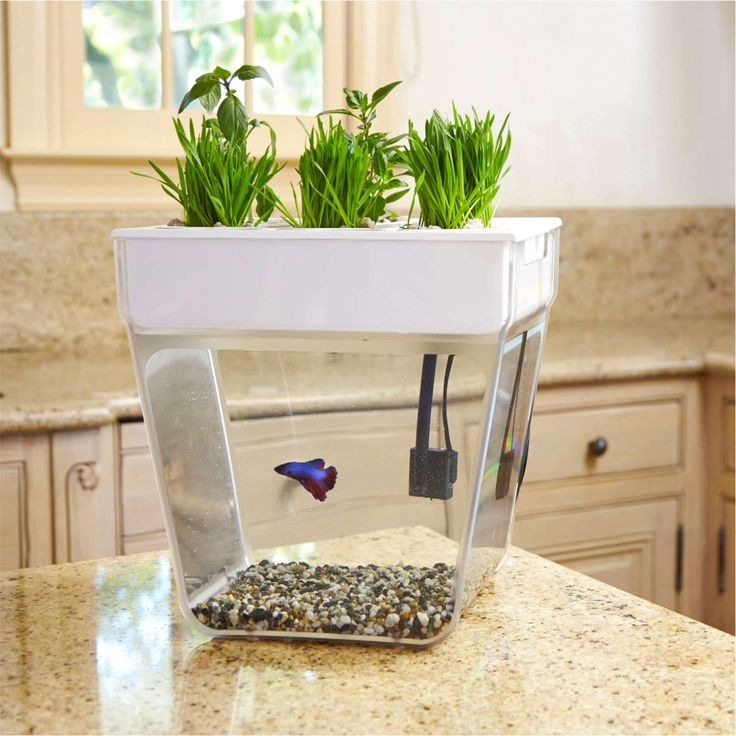

Hi! I'm Mallika
I'm a recent Cal graduate who studied Cognitive Science with an emphasis in Computer Science and Entrepreneurship in Technology. I'm excited about opportunities in product management, consulting, strategy, and analytics. I'm interested in the intersection of business, engineering, and design.
EXPERIENCE
Product/Program Management Intern
Intuit, Summer 2016
- Identified a set of metrics for measuring success towards Intuit’s goal of creating one online financial identity for its users by gaining insights from engineers, analysts, and product/program managers
- Created a dashboard that will be used by the Identity team and the SVP of Core Services to enable data-driven decision making and track progress towards this goal
- Helped the HR department redesign Intuit’s Careers site by building prototypes and conducting user testing
Technology Consulting Analyst Intern
Accenture, Summer 2015
- Wrote and executed test scripts for the search functionality on a custom application developed to improve and increase efficiency in client processes
- Authored requirements documents and decks on a supply chain management team for various stakeholders including account management, client leadership, and a third party consulting firm on project
- Consolidated timelines and crucial information to coordinate IT teams working on supply chain related ERP systems to ensure development, testing, and maintenance runs smoothly
Research Assistant
Haas School of Business, 2014

- Analyzed existing research on various topics within behavioral psychology to generate new research questions at Professor Don Moore’s lab
- Designed in-person and computer-administered experiments- including creating participant interfaces and developing a research protocol for my team to follow for conducting a study which had over 150 participants intenance runs smoothly
Marketing and Operations Intern
Back to the Roots, Summer 2014

- Increased cost efficiency for packaging of the Water Garden product by outsourcing processes and negotiating terms, resulting in $45k+ in savings on the order
- Helped rebrand the Water Garden product and kept the company website updated
- Developed a social media strategy based on data insights for the company’s Facebook, Twitter, and Instagram accounts to increase customer engagement
Business Development Intern
Silicon Valley Capital Management, Summer 2014
- Developed a database of potential clients based on market research and contacted them to introduce the services of the firm
- Analyzed the stock market and various industry trends to present stock pitches to the Managing Director of the firm
LEADERSHIP
President
Toastmasters on Campus, 2016-2017
- Helped coordinate club meetings, contests, and special events
- Mentored fellow members by sharing speechwriting and public speaking techniques
Director of Information Technology
Berkeley Business Society, Spring 2014
- Revamped berkeleybusinesssociety.com and digitized the application process to increase convenience and efficiency
- Extended networking and mentoring opportunities to members through guest speakers, panels, and workshops